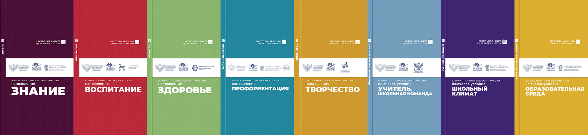

Платформа создана в рамках проекта «Региональная модель опережающей подготовки и непрерывного развития управленческих кадров системы образования в условиях демографических и социокультурных вызовов (на примере Кемеровской области — Кузбасса)». Она объединяет руководителей и заместителей образовательных организаций, участников кадрового резерва — для развития системы образования Кузбасса и реализации государственной политики.
Маршрут руководителя: от первичной диагностики к повторной, с индивидуальной программой развития между ними


Создать условия для осознанного профессионального роста руководителей, формирования сильного кадрового резерва и совместного поиска инновационных решений, направленных на повышение качества, эффективности и конкурентоспособности образования Кузбасса.
Для руководителей и заместителей образовательных организаций, кандидатов в кадровый резерв
Развить профессиональные и лидерские навыки на практических управленческих задачах
Маршрут развития строится по результатам вашей диагностики, без общих шаблонов
Передать удачные решения коллегам через банк практик и площадки региона
Консультации опытных управленцев и экспертов института по сложным ситуациям
Вместе определять повестку развития образования Кузбасса на мероприятиях проекта
Если у вас есть вопросы о проекте — свяжитесь с нашей командой
Адрес: г. Кемерово, ул. Заузелкова, 3
Телефон: 8 (3842) 37-80-33
Почта: ouk@kuz-edu.ru
Группа ВКонтакте · Telegram · Канал Max
Техническая поддержка: ouk@kuz-edu.ru · Приёмная института: +7 (3842) 37-80-33, ipk@kuz-edu.ru
г. Кемерово, ул. Заузелкова, 3 · 8 (3842) 37-80-33
Если карта не открылась в вашем браузере — найдите точку по ссылке.
Научно обоснованная система сопровождения управленца в сфере образования на всех этапах его карьеры: от прогноза кадровой потребности и диагностики до портфолио-аттестации и непрерывного развития. Модель объединяет четыре ключевых элемента: прогнозирование кадровой потребности региона, практико-ориентированное модульное обучение, аттестацию через личное портфолио и индивидуальный трек развития.
Путь руководителя от отбора в кадровый резерв до непрерывного развития в должности
Развитие идёт непрерывно: от отбора в резерв до аттестации и работы в должности
Каждый получает то, что нужно именно ему
Знания сразу применяются в проектах
Поддержка наставников и коллег
Объективная диагностика вместо субъективных оценок
«Портрет лидера образования Кузбасса 2030» — это вклад в систему образования региона через развитие тех, кто управляет школами и детскими садами сегодня.
ГБОУ ДПО «Институт развития образования Кузбасса»
Ректор ИРО Кузбасса, д-р филос. наук, канд. социол. наук, доцент — научный руководитель проекта
Проректор по науке, канд. ист. наук — научно-методическое сопровождение
Проректор по учебно-методической работе, канд. пед. наук — учебно-методический блок
Проректор по организационной работе и цифровизации — контент платформы и Центр аттестации
Зав. центром ДПО, канд. экон. наук — реализация программ повышения квалификации
Зав. отделом подготовки и сопровождения управленческих кадров — Лига экспертов и наставников
Методист, канд. экон. наук — диагностический инструментарий, аналитика
Методист — сопровождение диагностики и формирования портфолио
Пять ключевых компетенций управленческой деятельности руководителя образовательной организации. Под них выстроено всё: диагностический инструментарий, образовательные модули, банк кейсов и персональные траектории развития.
Система комплексной оценки профессиональных (управленческих) компетенций позволяет каждому участнику проекта самостоятельно определить свой уровень сформированности компетенций и получить персональные рекомендации.
Единые для всех муниципальных образований: анкеты, тесты, опросники, управленческие кейсы и симуляционные задания по пяти направлениям
Удобный онлайн-контент платформы «Управленческий навигатор Кузбасса» для самостоятельного заполнения
Автоматизированная система анализа данных выдаёт отчёт о сильных сторонах и зонах развития
Персональные советы: модульные курсы ПК, переподготовка, тренинги, конкурсы, гранты, саморазвитие
Диагностика проходит в личном кабинете участника проекта
В личном кабинете доступны два стандартизированных инструмента: лист самооценки по пяти направлениям компетенций (шкала 0–4) и комплексный тест из 20 заданий с автоматической проверкой и нормативными интерпретациями. Результаты сохраняются в вашем профиле. Пройдя диагностику до и после обучения по ИПР, вы увидите, как изменился уровень дефицитов.
Лист самооценки · 5 направлений Комплексный тест · 20 заданий Автоматический отчёт Сравнение результатов во времени
По уровням дефицитов профессиональных компетенций управленческих кадров
Высокая сформированность. Готов транслировать опыт, выступать наставником
Продвинутый уровень. Выполняются задания базового и частично продвинутого уровня
Базовый уровень. Требуется включение в ИПР для развития
Требуется развитие. Первоочередное включение в ИПР, наставническое сопровождение
История прохождения диагностики (дата, результат) и сравнение результатов во времени доступны в личном кабинете участника проекта.
Обучение строится под конкретные запросы руководителя: проектное управление, ВСОКО, развитие малокомплектной школы и другие темы собираются в персональный маршрут из четырёх форматов.
Четыре модульные программы ДПО (120 / 72 / 36 часов): стратегическое управление и проектная деятельность, финансово-хозяйственная деятельность, управление персоналом и командообразование, управление качеством образования, коммуникации и работа с общественностью, антикризисное управление. Личностно-ориентированный подход с учётом оценки управленческого портфолио.
Короткие прикладные курсы под специфические дефициты компетенций, выявленные диагностикой, — без отрыва от работы, с немедленным применением результата. Доступны из личного кабинета, а решённые задания становятся вкладом в портфолио.
Ежегодный форум «Управленческий компас» на площадках муниципалитетов, интенсивы, круглые столы, вебинары (не реже 1 раза в квартал): лидерские компетенции, карьерное планирование, ФХД, управление изменениями, наставничество, оценка качества.

Ресурсные центры управленческих практик в муниципальных образованиях: стажировочные сессии (не менее 2 в квартал), обмен практиками, виртуальные стажировочные площадки лучших школ региона. Работают 5 лабораторий по направлениям компетенций: стратегическая, финансовая, кадровая, лаборатория качества образования, лаборатория коммуникаций.

По ключевым управленческим дисциплинам в соответствии с выявленными дефицитами
Для формирования недостающих управленческих компетенций
В соответствии со сформированным образовательным маршрутом
Регулярное взаимодействие с действующим руководителем: передача практического опыта, технология «парного управления»
Поле для вопросов, предложений и консультаций: участники проекта пишут свои вопросы — команда и эксперты отвечают в формате очных и онлайн-встреч «Эффективный диалог» (не реже 1 раза в месяц) и тематических образовательных событий (не реже 1 раза в квартал).
Региональная Лига экспертов и наставников (68 специалистов из 27 территорий региона), опытные руководители и заместители руководителей образовательных организаций, команда проекта ИРО Кузбасса.
Сбор, запуск и продвижение идей и проектов кандидатов в муниципальный и региональный кадровый резерв
Выявление, отбор и мотивация кадров, обладающих проектным и управленческим потенциалом
Формирование индивидуальных маршрутов развития и интеграция с системой диагностики профессиональных дефицитов
Тесты, ситуационные задания с развёрнутым решением и с выбором ответа — для резерва и руководителей ОО в соответствии с профстандартом
Сопровождение управленческих кадров образовательных организаций региона в онлайн-формате
Интеграция с диагностикой «Управленческого навигатора Кузбасса»: данные отбора становятся стартовой точкой осознанного профессионального роста
Выявленные проблемы резерва, на которые отвечает модель: только 57 % кандидатов владеют основами проектной деятельности; дефицит навыков командного взаимодействия и делегирования; нехватка управленческих знаний (ФХД, нормативно-правовое обеспечение); психологический «страх» остаться один на один с новой профессией при назначении. 46 % кандидатов уже занимают управленческие должности.
Методические и нормативные материалы модели: всё, что нужно руководителю для подготовки к аттестации, формирования портфолио и ежедневной управленческой работы.
Новый Порядок организации и осуществления образовательной деятельности по дополнительным профессиональным программам (приказ Минобрнауки России от 24.03.2025 № 266): требования к структуре программ ПК и переподготовки.
ФГОС СОО утверждён приказом Минпросвещения России от 24.02.2025 № 138; профстандарт «Руководитель профессиональной образовательной организации» — приказ Минтруда России от 21.03.2025 № 137н; изменения ФГОС НОО/ООО применяются с 01.09.2025.
Закон Кемеровской области от 05.07.2013 № 86-ОЗ «Об образовании» действует в редакции от 1 июля 2026 г.; ФЗ № 273-ФЗ и кодексы применяются в редакциях 2026 г.
Ваш профессиональный рост — наше общее будущее. Анкета, диагностика, индивидуальная траектория, портфолио и прогресс во времени — всё в одном кабинете.
При возникновении сложностей со входом обратитесь к координатору проекта в своём муниципалитете.
АнкетаДиагностикаМоя траектория (ИПР)ПортфолиоПрогресс во времени
Хранение данных:
· история прохождения диагностики (дата, результат);
· возможность сравнивать результаты (прогресс во времени).
• director (пароль demo123) — директор ОО с полной историей
• deputy (пароль demo123) — заместитель директора
• reserve (пароль demo123) — кандидат в кадровый резерв
• expert (пароль expert123) — эксперт Лиги (отвечает в «Эффективном диалоге»)
Здесь вы можете изменить любой текст, показатель статистики, карточку, документ или фотографию на платформе. Все изменения мгновенно сохраняются на сервере и отображаются посетителям сайта.
Ключевые тексты первого экрана главной страницы
4 ключевых показателя на главной странице и мотивационная цитата
Миссия, цели, задачи и уникальность региональной модели
Отображаются в блоке контактов, на карте и в подвале сайта
Номер телефона автоматически обновляется на всех страницах сайта и в ссылках для быстрого набора с мобильного телефона.
Вы можете изменить названия направлений, их описания и контрольные цитаты самооценки
Вводный текст и 4 формата подготовки управленцев
Вводный текст, цифры статистики и уровни модели резерва
Вводный текст раздела и блоки изменений законодательства
Документ сразу появится на странице «В помощь руководителю»
Управление документами и удаление в один клик
Редактирование, добавление и настройка заданий комплексного теста (20 ситуаций) и листа самооценки (5 направлений)
Просмотр зарегистрированных пользователей, результатов тестирования, индивидуальных планов и скачивание официальных бланков
| Участник | Организация / Должность | Стаж (О/П/У) | Диагностика | ИПР | Официальные выгрузки |
|---|---|---|---|---|---|
| Загрузка списка участников... | |||||
Здесь отображаются все вопросы от участников. Вы можете удалять спам или редактировать ответы экспертов
Вы можете загрузить любое новое фото с компьютера или добавить по ссылке в общую галерею платформы
Назначьте изображения для основных блоков платформы